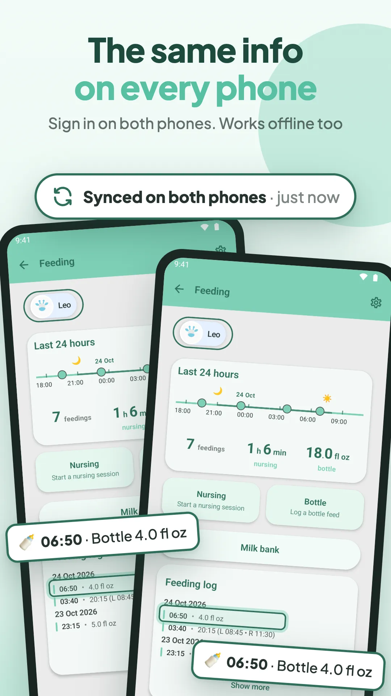

In questa pagina · 9 sezioni
In breve
Fare i turni non significa essere entrambi mezzi svegli tutta la notte: significa che ognuno ha un blocco di sonno continuo mentre l'altro è di guardia. Il modo più semplice è dividere la notte in due (per esempio, dalle 21:00 alle 2:00 e dalle 2:00 alle 7:00, orari indicativi). Se allatti, il partner può occuparsi di tutto tranne della poppata, oppure dare una poppata con latte spremuto quando l'allattamento è ben avviato. E annotare poppate e sonnellini in un posto che vedete entrambi evita il "quando ha mangiato?" a ogni cambio turno.
- Obiettivo
- Un blocco continuoper ciascuno, ogni notte
- Turno semplice
- Notte divisa in due21:00-2:00 / 2:00-7:00
- Con l'allattamento
- Tutto tranne il senoo una poppata di latte spremuto
- Al cambio turno
- Un registro comunequando ha mangiato e quanto ha dormito
Perché fare i turni funziona
- Ognuno può dormire un blocco senza interruzioni. Con un piano, chi non è di guardia dorme senza essere svegliato dal bebè, e chi lo è sa che tocca a lui. Lo stesso NHS suggerisce di fare i turni per dormire senza essere disturbati.
- L'altro genitore costruisce il proprio legame. Dare da mangiare, fare il bagnetto, cambiare e addormentare il neonato è un modo per conoscerlo e stargli vicino. Gli studi associano il coinvolgimento del padre o del partner nelle cure a un legame più forte con il bambino, anche quando non c'è allattamento al seno.
- Meno peso per chi si sta riprendendo dal parto. Dopo il parto il corpo ha bisogno di tempo per recuperare, e senza un piano quasi tutta la notte ricade di solito sulla madre.
- Dormire male e depressione post partum vanno di pari passo. Le revisioni della letteratura rilevano che i problemi di sonno e la depressione post partum sono associati, anche se non è del tutto chiaro quale causi l'altro. Proteggere il sonno di entrambi è un modo semplice di prendersi cura l'uno dell'altra.
Come dividere la notte con un neonato: 3 orari
Non esiste un orario giusto. Scegliete quello che si adatta ai vostri lavori e a quando ciascuno dorme meglio, provatelo per una settimana e poi aggiustatelo. Gli orari degli esempi sono indicativi. L'importante è che chi non è di guardia possa dormire davvero: un'altra stanza o i tappi per le orecchie, e il telefono in silenzioso.
1. Notte divisa in due (la più comune)
Ognuno dorme circa 5 ore di fila. Chi si alza presto per lavorare prende il primo turno.
2. Una poppata ciascuno (biberon o latte spremuto)
Utile con un neonato che mangia molte volte di notte: ognuno fa le poppate del proprio turno.
3. Notti alterne o fine settimana
Di solito funziona meglio quando il bebè si sveglia meno. Nel fine settimana, una mattina di sonno prolungato per ciascuno.
Come cambia la divisione in base all'età
| Età | Come sono le notti | Turno che di solito funziona |
|---|---|---|
| 0-3 mesi | Mangia molte volte, di giorno e di notte. | Notte divisa in due o una poppata ciascuno. Di giorno, sonnellini a turno per recuperare. |
| 3-6 mesi | Iniziano periodi di sonno più lunghi, con alti e bassi. | Notte divisa in due; chi è di guardia fa anche il primo risveglio. |
| 6-12 mesi | Meno poppate notturne; risvegli per i dentini, le regressioni o le malattie. | Notti alterne, con l'altro di rinforzo nelle notti difficili. |
Queste età sono indicative: ogni bambino ha i suoi tempi e svegliarsi di notte è normale per tutto il primo anno. Se vuoi sapere quanto dovrebbe dormire il tuo bambino a ogni età, lo trovi nella nostra routine del sonno del neonato per età, e per organizzare il resto della giornata con un neonato, nella routine quotidiana del neonato.
Conta anche la divisione di giorno
Le notti pesano di più, ma la stanchezza si accumula con tutto il resto. Dividersi compiti fissi evita di doverli negoziare ogni giorno:
| Compito | Esempio di divisione |
|---|---|
| Bagnetto | Sempre la stessa persona: diventa il suo momento con il bambino. |
| Routine della buonanotte | A giorni alterni, perché il bambino si addormenti con tutti e due. |
| Pappe (dai 6 mesi) | Chi non allatta si occupa della cena. |
| Visite dal pediatra e vaccini | Chi può andare; l'altro legge gli appunti dopo. |
| Casa: spesa, cene, lavatrici | Chi ha fatto il turno di notte più duro fa meno quel giorno. |
Se allatti al seno
L'allattamento non impedisce di fare i turni; cambia ciò che fa ciascuno.
- Tutto tranne il seno: il partner si alza, cambia il pannolino, porta il bambino a letto per la poppata, gli fa fare il ruttino e lo riaddormenta. La madre dà solo il seno e continua a dormire. Il NHS lo riassume così: il partner può occuparsi dei pannolini e di vestire il bambino al mattino, così la madre può tornare a dormire.
- Una poppata con latte spremuto: quando l'allattamento è ben avviato, il partner può ogni tanto dare una poppata notturna con il biberon, così la madre dorme un blocco più lungo. Se avete dubbi su quando iniziare con il biberon, chiedete all'ostetrica o a una consulente per l'allattamento.
- Per evitare il seno troppo pieno: la produzione di latte si adatta a ciò che chiede il bambino, e se il seno resta molte ore senza svuotarsi può sentirsi molto pieno o fastidioso. Per questo molte madri spremono un po' di latte vicino all'orario della poppata che fa il partner, e quello stesso latte è quello che viene dato. Spremere il latte serve anche ad alleviare un seno fastidiosamente pieno.
In caso di dubbi, un'ostetrica o una consulente per l'allattamento vi aiuta ad adattare tutto al vostro bambino.
Il cambio turno senza domande
Alle 2 di notte nessuno si ricorda quando ha mangiato il bambino. Accedete entrambi a Raffy con lo stesso account Google (Settings → Account and Sync) e vedrete entrambi le stesse poppate e gli stessi sonnellini sul vostro telefono. Si sincronizza da solo, anche se non all'istante: dagli qualche istante se hai appena annotato qualcosa. È gratis.

Se non usate ancora nessuna app, confrontiamo le opzioni nelle migliori app di monitoraggio del neonato per Android.
Sicurezza e quando chiedere aiuto
- Non addormentarti mai con il neonato sul divano o in poltrona. Il rischio di morte improvvisa è molto più alto quando un neonato dorme con un adulto su un divano o in poltrona. Se senti che ti si chiudono gli occhi durante una poppata, rimetti il bambino nella culla o sveglia il tuo partner.
- Se guidi il giorno dopo una notte di guardia molto brutta, fai guidare l'altro o aspetta di essere più riposato.
- Chiedete aiuto se uno di voi due è triste o senza speranza quasi ogni giorno, non prova piacere in niente, non riesce a dormire nemmeno quando il bambino dorme, o ha pensieri di farsi del male o di fare del male al bambino. E non succede solo alle madri: negli studi, circa il 10% dei padri ha avuto una depressione durante la gravidanza o il primo anno del bambino, ed è più frequente intorno ai 3-6 mesi.
- Chi chiamare: la tua ostetrica, il medico di famiglia o il pediatra. Se hai pensieri di farti del male, chiama Telefono Amico Italia al 02 2327 2327 (ogni giorno, 24 ore su 24) oppure il 112 in caso di emergenza.
Questo articolo ha scopo educativo e non sostituisce la valutazione di un professionista sanitario.
Domande frequenti
Come ci si divide le notti con un neonato?
Il modo più semplice è dividere la notte in due turni di circa 5 ore (per esempio, dalle 21:00 alle 2:00 e dalle 2:00 alle 7:00). Chi è di guardia gestisce tutti i risvegli del proprio turno e l'altro dorme senza interruzioni.
Il partner può fare i turni se c'è l'allattamento al seno?
Sì. Può occuparsi di tutto tranne della poppata (cambio, ruttino, riaddormentamento) oppure, quando l'allattamento è ben avviato, dare una poppata con latte spremuto. In quel caso conviene che la madre spremi un po' di latte vicino a quell'ora, perché il seno non diventi fastidiosamente pieno.
È meglio alternare le notti o dividere ogni notte?
Con un neonato di solito funziona meglio dividere ogni notte, perché nessuno regge un'intera notte di poppate frequenti. Quando il bebè si sveglia meno, le notti alterne permettono a ciascuno di dormire una notte intera.
Come facciamo a sapere cosa è successo durante il turno dell'altro?
Annotando ogni poppata e ogni sonno in un posto che vedete entrambi, come un'app di monitoraggio condivisa. Così il cambio turno non dipende da ciò che ricorda qualcuno mezzo addormentato.
E se uno dei due lavora fuori casa?
Chi lavora può prendere il primo turno della notte e dormire di fila la seconda metà, compensando con più compiti nel pomeriggio e nel fine settimana. L'importante è che la divisione la decidiate insieme e la riviate ogni poche settimane.
Fonti
- NHS (Regno Unito)Sleep and tiredness after having a baby (in inglese)
- Ready to Relate · Bradford District Care (NHS)Understanding your baby's sleep (in inglese)
- NHS (Regno Unito)Expressing and storing breast milk (in inglese)
- NHS (Regno Unito)Postnatal depression (in inglese)
- Associazione Spagnola di Pediatria · Comitato per l'allattamento maternoRaccomandazioni sull'allattamento materno (in spagnolo)
- American Academy of Pediatrics · HealthyChildren.orgA parent's guide to safe sleep (in inglese)
- Health Service Executive (Irlanda)Recovering after the birth (in inglese)
- Telefono Amico ItaliaTelefono Amico Italia: 02 2327 2327
- JAMA (2010)Paulson e Bazemore. Prenatal and postpartum depression in fathers and its association with maternal depression: a meta-analysis (in inglese)
- JOGNN (2015)Bhati e Richards. A systematic review of the relationship between postpartum sleep disturbance and postpartum depression (in inglese)
- Family Practice (2025)Yıldırım e Şahin. Does father involvement affect attachment and maternal depression and quality of life? Studio randomizzato (in inglese)
- Irish Journal of Medical Science (2026)Akça e Tuncay. Fathers' involvement in infant care and infant attachment levels (in inglese)
Abbiamo verificato questo articolo rispetto a queste fonti il 17 novembre 2026. Ha scopo educativo e non sostituisce il parere medico. Politica editoriale